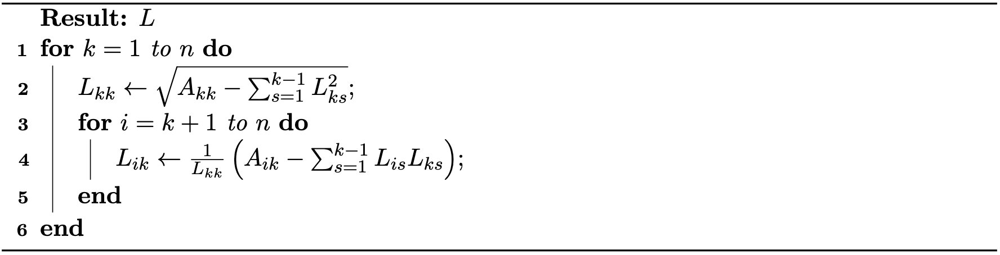

Direct solvers are a class of algorithms designed to compute the exact solution to a linear system in a finite number of steps, up to numerical precision. In the context of optimization and simulation, the coefficient matrix A is often symmetric positive definite (SPD), making direct solvers both robust and efficient for moderate-sized problems.
Solving Ax=b is particularly straightforward when A is triangular. If A is lower triangular, i.e.
a11a21⋮an10a22⋮an2⋯⋯⋱⋯000annx1x2⋮xn=b1b2⋮bn.(37.1.1)
the system can be solved by forward substitution. The i-th variable is solved as:
xi=aii1(bi−j=1∑i−1aijxj),i=1,…,n.(37.1.2)
This process proceeds from i=1 to n, using previously computed xj for j<i.
If A is upper triangular, the system is solved by backward substitution:
xi=aii1(bi−j=i+1∑naijxj),i=n,n−1,…,1.(37.1.3)
This process proceeds from i=n down to 1, using already computed xj for j>i.
For general SPD matrices, we can reduce the problem to triangular systems using the Cholesky decomposition. Given A SPD, we can factor A=LLT, where L is lower triangular.
Method 37.1.1 (Cholesky Decomposition). Given a symmetric positive definite matrix A, the Cholesky decomposition computes a lower triangular matrix L such that A=LLT. The algorithm is as follows:
Algorithm 37.1.1 (The Cholesky Decomposition Algorithm).

Once the decomposition is computed, solving Ax=b reduces to two triangular systems:
Forward substitution: Solve Ly=b for y.
Backward substitution: Solve LTx=y for x.
Cholesky decomposition takes advantage of the symmetry and positive definiteness of A, reducing both computational cost and memory usage compared to general-purpose methods like LU decomposition. Direct solvers are widely used when the system size is not too large, or when high accuracy is required for ill-conditioned systems. For very large or highly sparse systems, iterative solvers may be preferred, as discussed in the next section.